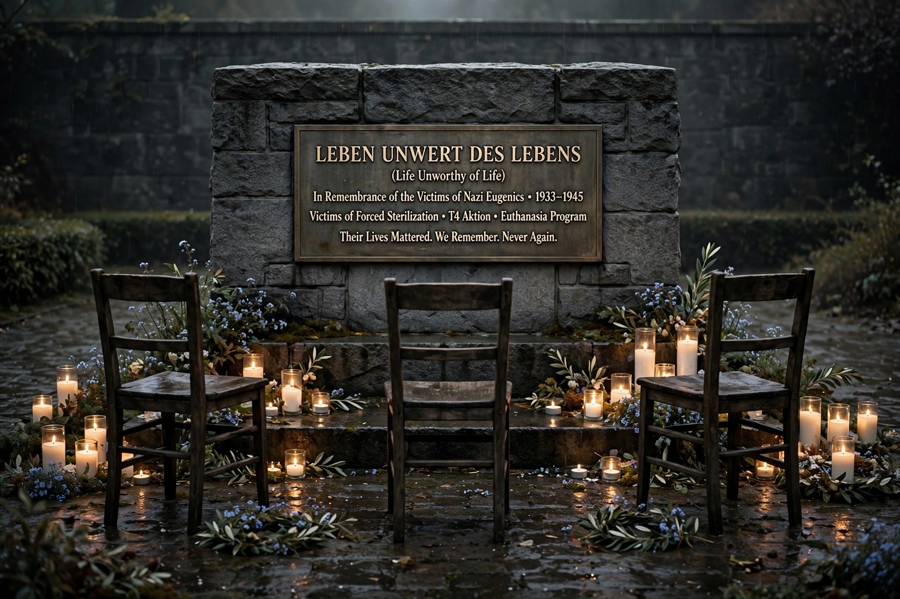

German: Lebensunwertes Leben. A phrase from Nazi ideology designating people considered a burden and targeted for extermination.
Life unworthy of life (German: Lebensunwertes Leben) was a designation for the segments of the populace which, according to the philosophy of Nazi Germany, had no right to live. Those individuals were targeted to be murdered by the state, usually through forced euthanasia programmes.
The expression was coined in the 1920 book Die Freigabe der Vernichtung lebensunwerten Lebens (Permitting the Destruction of Life Unworthy of Life) by jurist Karl Binding and psychiatrist Alfred Hoche. They argued for allowing the killing of incurably ill and disabled people, framing it in economic and eugenic terms.
Under the Nazis the concept expanded to include people considered racially or socially undesirable. It provided ideological justification for Aktion T4, the involuntary euthanasia programme that murdered tens of thousands of disabled adults and children, and for aspects of the Holocaust. Killing centres and medical personnel developed methods later used in extermination camps.
After the Second World War the phrase became emblematic of dehumanising medical and eugenic ideology. It is discussed in bioethics, disability rights, and Holocaust education as a warning about state power over life and death.